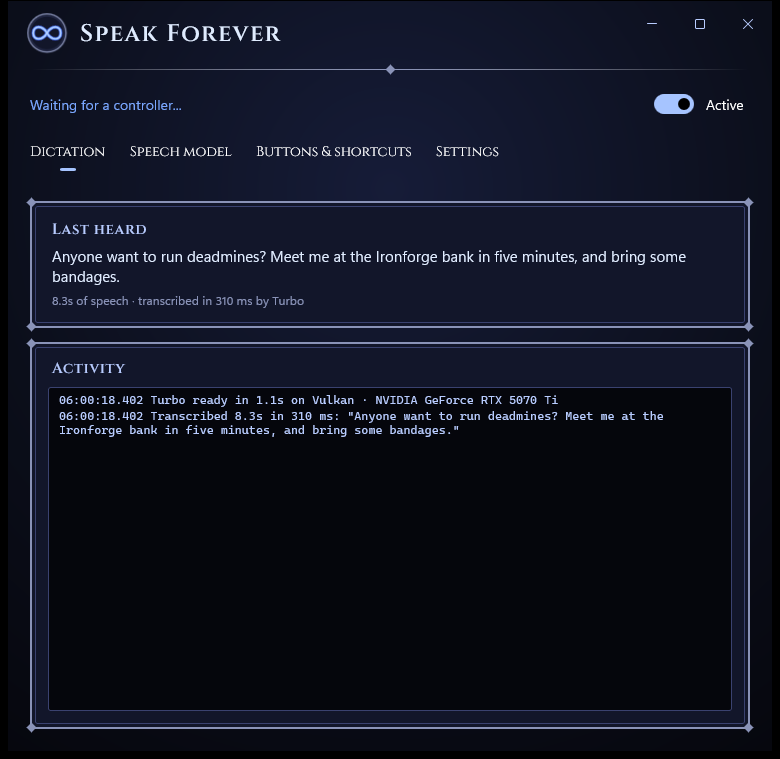
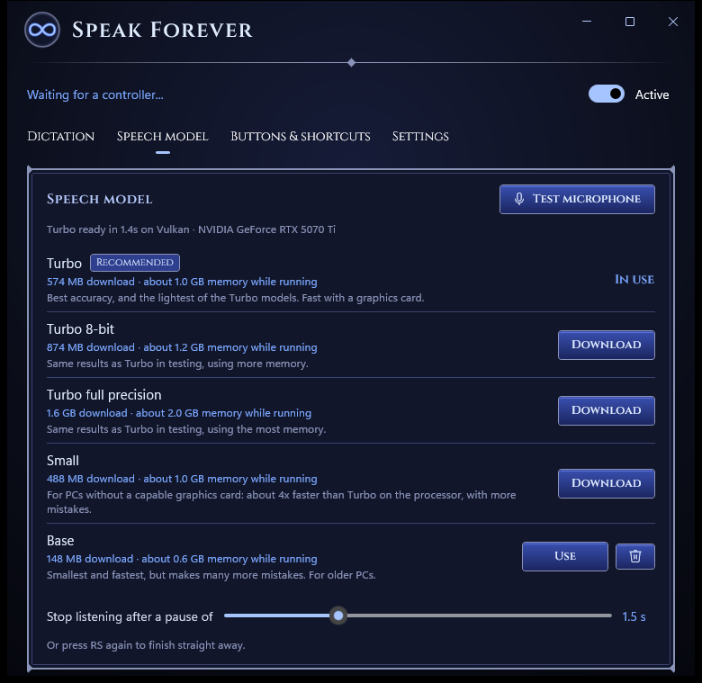
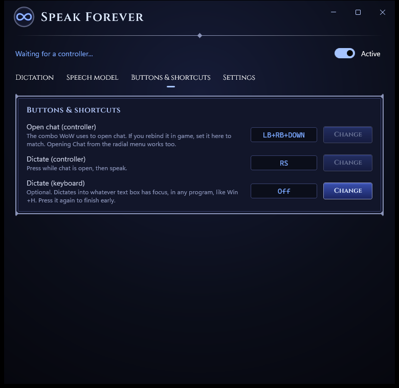
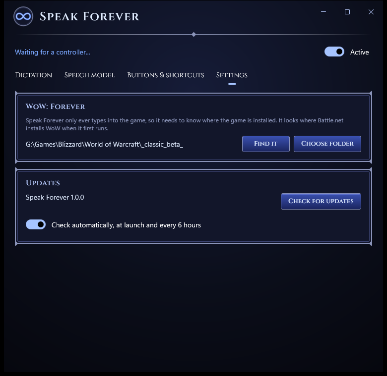
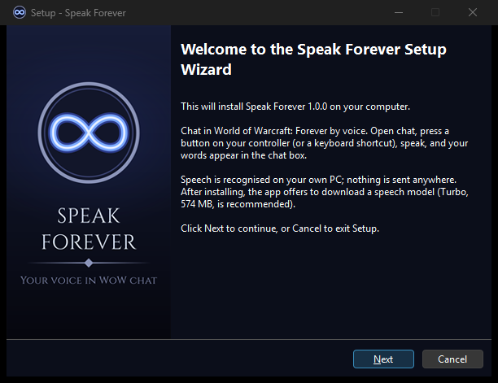

Speak Forever
Chat in World of Warcraft: Forever with your voice.
Open chat with your controller, click the right stick and say your message. It's typed into the chat box; press A to send. Speech is recognised on your own PC, and nothing you say is sent anywhere.

Three presses, no typing
Built for WoW: Forever's gamepad mode. Speak Forever follows the game's own chat panel: no addon, no extra bindings.
Open chat
LB+RB+Down as usual, or pick Chat from the radial menu.
Speak
Click RS, hear the beep, and say your message. Pause, and it's typed for you.
Send
Press A. Changed your mind? B backs out, as it always does.
Private, and fast
Speak Forever uses OpenAI's Whisper speech recognition, running on your own graphics card. What you say never leaves your PC.
- Choose a model by how much memory you can spare while you play; each shows its size up front.
- Turbo, the recommended model, uses about 1 GB and gets WoW's place names right.
- Works on the processor too, for PCs without a capable graphics card.

Made for the controller
It watches the same buttons the game does, so it only ever types into an open chat box: never into the world as key presses.
- Rebind the open-chat combo and the dictate button to match your game.
- Opening chat from the radial menu works too.
- Playing on keyboard? Set a shortcut and dictate into any chat box, like Windows+H.

Sets itself up
On first run it finds WoW: Forever where Battle.net installed it, and it only types into that game. If it can't find it, it asks.
- Tells you when there's a new version, and checks whenever you ask.
- Downloads models for you and checks every file before using it.

Installs in a minute
A small installer for your Windows account only, so no admin rights are needed. Pin it to Start or the taskbar, or have it start when you sign in.
Uninstalling keeps your downloaded models unless you choose otherwise.

Download Speak Forever
Free for Windows 10 and 11 (64-bit).
Download for Windows- Windows may warn you. The installer isn't code-signed yet, so SmartScreen can say "Windows protected your PC". Click More info, then Run anyway.
- You'll need WoW: Forever (it works with the beta), a microphone (a headset works best), and a controller or keyboard.
- First run: download a speech model in the app. Turbo is recommended: 574 MB.
- Setup help, the settings file and troubleshooting are in the README.